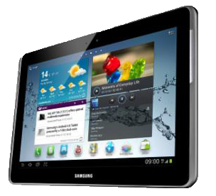

Un sistema operativo móvil o SO móvil es un sistema operativo que controla un dispositivo móvil al igual
que los PCs utilizan Windows o Linux entre otros. Sin embargo, los sistemas operativos móviles son mucho
más simples y están más orientados a la conectividad inalámbrica, los formatos multimedia para móviles y
las diferentes maneras de introducir información en ellos.
Algunos de los sistemas operativos utilizados en los dipositivos moviles están basado en el modelo de capas.

Con un dispositivo móvil
puedes hacer muchas cosas
como ver películas,
navegar por Internet,
manejar tu agenda,
jugar y mucho más.
 |
 |
|
|
iOS 7 es la esencia del iPhone, el iPad y el iPod touch por muchos motivos. Es eficaz y elegante como nunca. Más fácil de usar y seguro que cualquier versión anterior. Y tiene unas prestaciones con las que da gusto hacer hasta las tareas más sencillas. |
Es un sistema operativo basado en el kernel de Linux diseñado principalmente para dispositivos móviles con pantalla táctil, como teléfonos inteligentes o tabletas, inicialmente desarrollado por Android |
Es un sistema operativo móvil desarrollado por Microsoft como sucesor de Windows Mobile. A diferencia de su predecesor está enfocado en el mercado de consumo en lugar de en el mercado empresarial. |
|
|
|
|
|
El BlackBerry OS es un sistema operativo móvil desarrollado por RIM para los dispositivos BlackBerry. El sistema permite multitarea y tiene soporte para diferentes métodos de entrada adoptados por RIM para su uso en computadoras de mano, particularmente la trackwheel, trackball, touchpad y pantallas táctiles. |
Firefox OS dispone de todas las características que desde siempre te han hecho desear tener un teléfono inteligente. Se adapta a tu vida perfectamente para que tú puedas adaptarte al mundo que te rodea. |
Su contenido y aplicaciones se encuentran en el corazón de la experiencia Ubuntu - muy bien presentado y perfectamente organizados por ámbitos. Un golpe le lleva a Scopes, Aplicaciones, Música, vídeo. Rejillas de aplicaciones obsoletos están acabados. |